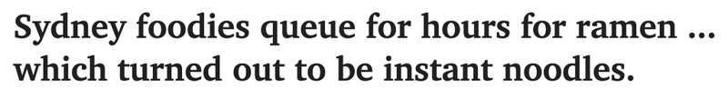
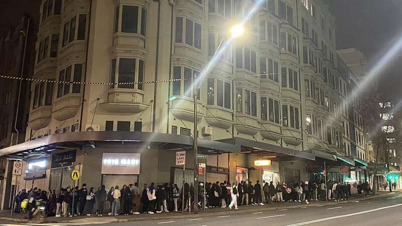

《每日电讯报》8月6日报道，数百名悉尼市民在寒风中排队等候“假拉面”引起热议。

今年七月，一家名为Nise Janagaru的餐厅在TikTok上引发了轰动。
视频声称该餐厅正在全球巡回举办私密拉面品鉴会，而如今在悉尼的Surry Hills免费发放70碗拉面。

（图片来源：《每日电讯报》）
于是，热爱美食的市民们在寒风中排队数小时，只为尝尝这道美食。
然而，这场活动其实是一个恶作剧。
所谓的拉面其实只是方便面，视频中声称“我们将拉面视为艺术，正如我们相信艺术应该人人可及，我们也希望人人都能品尝我们的拉面”的宣传，其实是由Youtuber Stanley Chen制作的。
在这段疯传的视频中，餐馆宣称“自1943年以来，我们一直在全球举办免费私密拉面品鉴会，今年我们首次决定在澳洲公开举办。”
Chen表示，这次恶作剧是为了嘲弄那些收费昂贵但菜品不一定值那个价格的高档餐厅。
（图片来源：网络）
“这有点讽刺那些自我标榜为高质量，但其实只是卖体验而非真正食物的餐厅，那些过于夸张、却收取高额费用的餐馆，”Chen说。
对于那些感到被愚弄的人，Chen表示歉意。
“我故意选择不收费，希望人们不要感到被骗。其实我们在这次活动中亏损严重，因为是免费的，”他说。
“我们也尽力管理了排队情况，为没有进入的人表示歉意。”
Advertisements